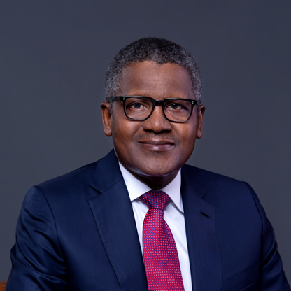

Aliko Dangote is a Nigerian businessman and industrialist. He is best known as the founder, chairman, and CEO of the Dangote Group, the largest industrial conglomerate in West Africa. The Bloomberg Billionaires Index estimated his net worth at $25.1 billion in November 2023, making him the richest person in Africa, the world's richest black person, and the world's 72nd richest person overall.
Dangote was born into a wealthy Hausa Muslim family on 10 April 1957 in Kano, which was then part of British Nigeria. His mother, Mariya Sanusi Dantata, was the daughter of businessman Sanusi Dantata. His father, Mohammed Dangote, was a business associate of Dantata. Through his mother, he is the great-grandson of Alhassan Dantata, the richest person in West Africa at the time of his death in 1955. Dangote's brother, Sani (1959/60–2021), was also a businessman. Dangote was educated at the Sheikh Ali Kumasi Madrasa, followed by Capital High School in Kano. In 1978, he graduated from the Government College, Birnin Kudu. He received a bachelor's degree in business studies and administration from Al-Azhar University in Cairo.
The Dangote Group was established as a small trading firm in 1977, the same year Dangote relocated to Lagos to expand the company.Dangote received a ₦500,000 loan from his uncle to begin trading in commodities, including bagged cement as well as agricultural goods like rice and sugar.In the 1990s, he approached the Central Bank of Nigeria with the idea that it would be less expensive for the bank to allow his transport company to manage their fleet of staff buses, a proposal that was also approved.
Today, the Dangote Group is one of the largest conglomerates in Africa, with international operations in Benin, Ghana, Zambia, and Togo. The Dangote Group has moved from being a trading company to being the largest industrial group in Nigeria, encompassing divisions like Dangote Sugar Refinery, Dangote Cement, and Dangote Flour.Dangote Group dominates the sugar market in Nigeria, and its refinery business is the main supplier (70 percent of the market) to the country's soft drink companies, breweries, and confectioners. The company employs more than 11,000 people in West Africa.
In July 2012, Dangote approached the Nigerian Ports Authority to lease an abandoned piece of land at the Apapa Port, which was approved.He later built facilities for his sugar company there. It is the largest refinery in Africa and the third largest in the world, producing 800,000 metric tons of sugar annually. The Dangote Group owns salt factories and flour mills and is a major importer of rice, fish, pasta, cement, and fertilizer. The company exports cotton, cashew nuts, cocoa, sesame seeds, and ginger to several countries. Additionally, it has major investments in real estate, banking, transport, textiles, oil, and gas.
In February 2022, Dangote announced the completion of the Peugeot assembling facility in Nigeria following his partnership with Stellantis Group, the parent company of Peugeot, and the Kano and Kaduna state governments. The new automobile company, Dangote Peugeot Automobiles Nigeria Limited (DPAN) factory, which is based in Kaduna, commenced operations with the roll-out of the Peugeot 301, 508, 3008, 5008, and Landtrek.
On 22 May 2023 in Lekki, Nigeria, Dangote commissioned the Dangote Refinery. The plant plans to export surplus petrol, turning Africa's biggest oil producer into an export hub for petroleum products. It also plans to export diesel, according to Dangote, who funded the refinery's construction. The refinery is situated on a 6,180-acre (2,500 hectares) site at the Lekki Free Trade Zone, Lekki, Lagos State. It is supplied with crude oil by the largest sub-sea pipeline infrastructure in the world at 1,100 kilometres (680 mi) long.
Dangote lives in Lagos.He owns two private jets and reportedly works 12 hours every day from 5 a.m. to 5 p.m. and runs 10 miles on a treadmill almost every day. Dangote married Zainab Dangote in 1977, but they divorced at an unknown date. He was later married to Mariya Muhammad Rufai until their divorce, though the dates of the wedding and divorce are unknown. He has three daughters named Halima, Mariya, and Fatimah, and an adopted son named Abdulrahman. Halima followed him into the business world and is currently his company's executive director of commercial operations.